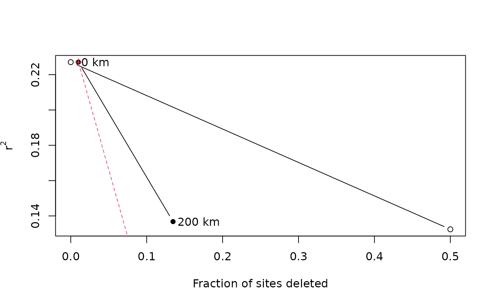

R/plot.RNE.r, R/rne.R
rne.RdCalculates effect of deleting sites from training set at random, from a geographic neighbourhood, or from an environmental neighbourhood. A simple graphical technique for gauging the effect of spatial autocorrelation on the transfer function model.
RNE object to be plotted
Which column of the results to plot eg if more than one WAPLS component is calculated
Y-limits of the plot
Arguments passed to fun
Community data, or distance object, or distance matrix
Environmental variable
Matrix of geographical distances between sites
Transfer function
Neighbourhood radii
Proportion of sites to retain in random deletion
integer, number of times to delete sites at random
Returns an RNE object, list with two components
random Performance with random deletion.
neighbour Performance with deletion by neighbourhood, or environment
Finds the leave-one-out transfer function performance if sites are deleted at random (repeated 10 times to reduce variance in results), from a neighbourhood zone, or by deleting environmentally close sites.
plot: Plot RNE object
Telford, R. J. and Birks, H. J. B. (2009) Evaluation of transfer functions in spatially structured environments. Quaternary Science Reviews 28: 1309--1316. doi:10.1016/j.quascirev.2008.12.020
require(fields)
#> Loading required package: fields
#> Loading required package: spam
#> Spam version 2.9-1 (2022-08-07) is loaded.
#> Type 'help( Spam)' or 'demo( spam)' for a short introduction
#> and overview of this package.
#> Help for individual functions is also obtained by adding the
#> suffix '.spam' to the function name, e.g. 'help( chol.spam)'.
#>
#> Attaching package: ‘spam’
#> The following objects are masked from ‘package:base’:
#>
#> backsolve, forwardsolve
#> Loading required package: viridis
#> Loading required package: viridisLite
#>
#> Try help(fields) to get started.
require(rioja)
data(arctic.env)
data(arctic.pollen)
# using just the first 20 sites so that code runs in an reasonable time
arctic.dist <- rdist.earth(
x1 = arctic.env[1:20, c("Longitude", "Latitude")],
miles = FALSE
)
arctic.rne <- rne(
y = arctic.pollen[1:20, ], env = arctic.env$tjul[1:20],
geodist = arctic.dist, fun = MAT, neighbours = c(0, 200),
subsets = c(1, .5), nrep = 2, k = 5
)
#> [1] "random subset = 1"
#> [1] 0.002233178 0.055492467
#> [1] "random subset = 0.5"
#> [1] 0.04694498 0.10965340
#> prop r21 r22
#> [1,] 1.0 0.002233178 0.05549247
#> [2,] 0.5 0.046944980 0.10965340
#> [1] "neighbourhood = 0 km"
#> [1] "neighbourhood = 200 km"
plot(arctic.rne)

#> $r
#> prop r21
#> [1,] 1.0 0.002233178
#> [2,] 0.5 0.046944980
#>
#> $n
#> [,1] [,2] [,3]
#> [1,] 0 0.0000000 0.002233178
#> [2,] 200 0.4157895 0.286109554
#>
#> $e
#> [1] 0.002233178 0.675509988
#>